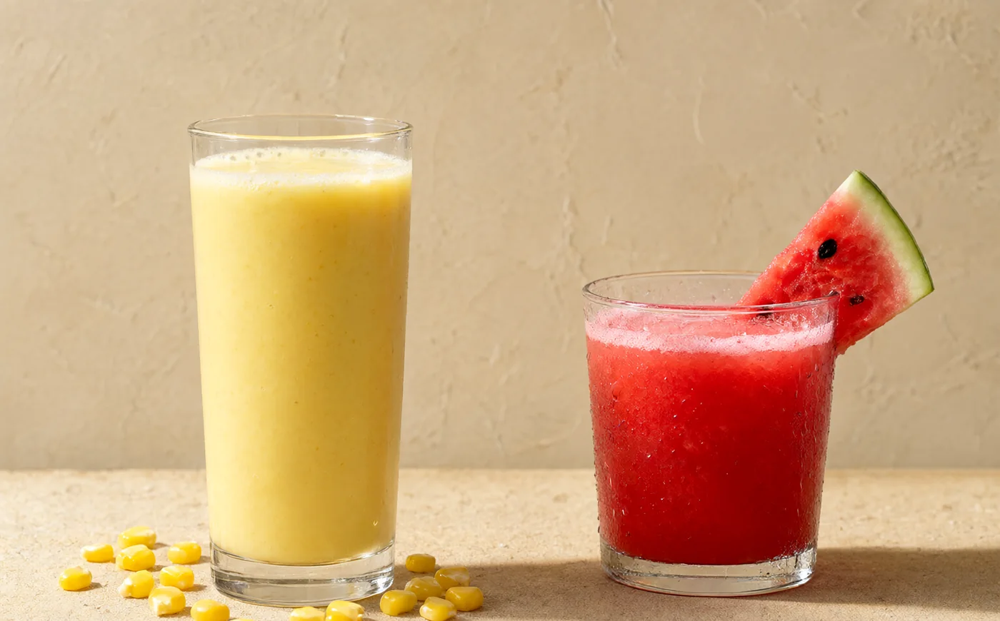
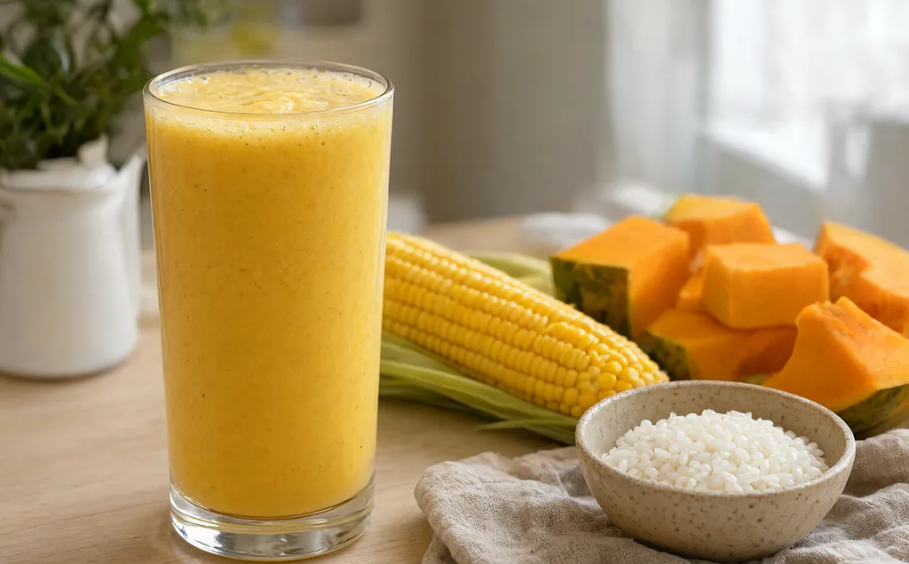
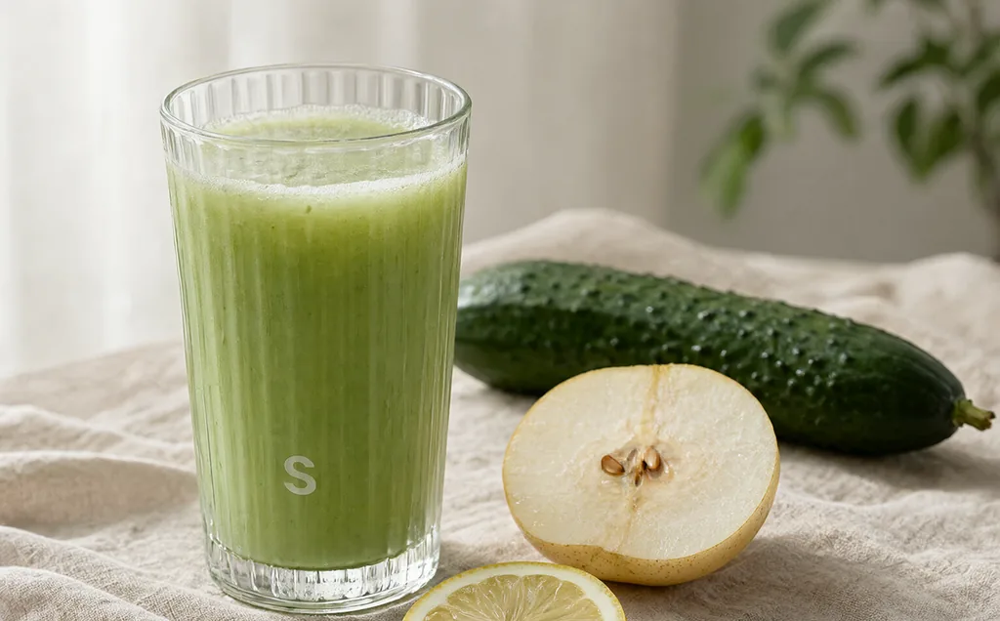
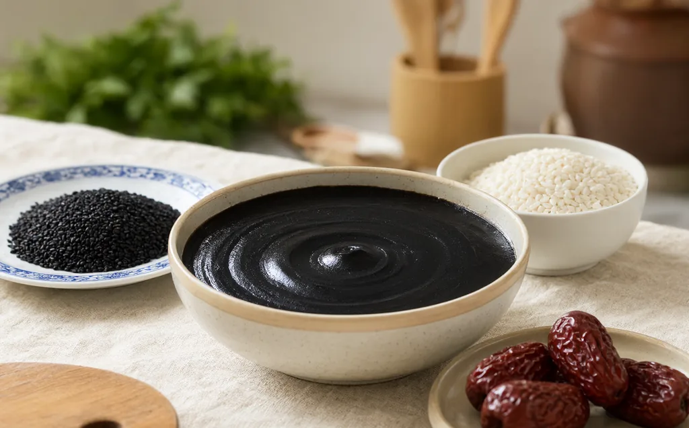
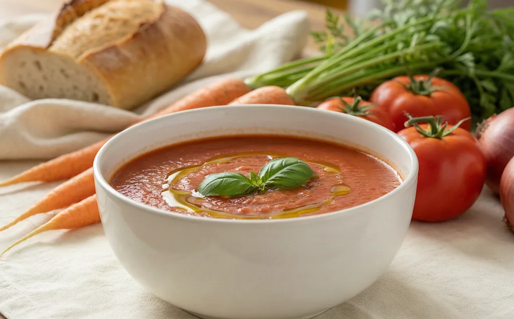
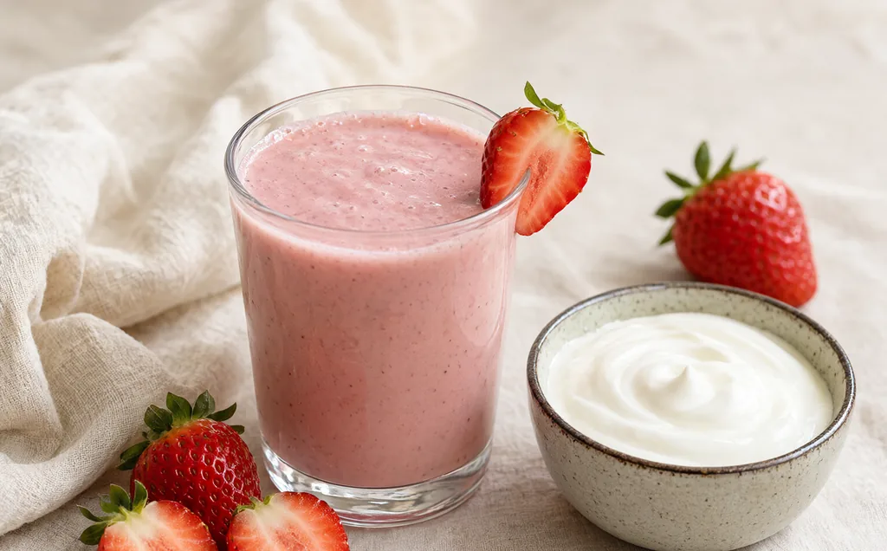
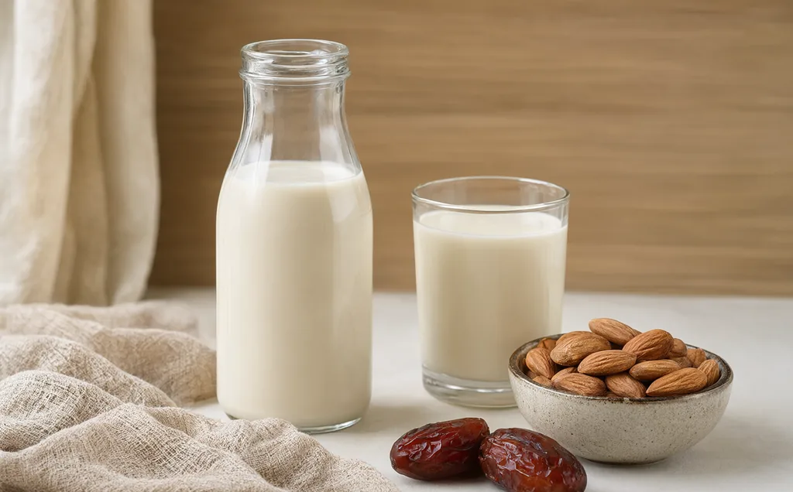
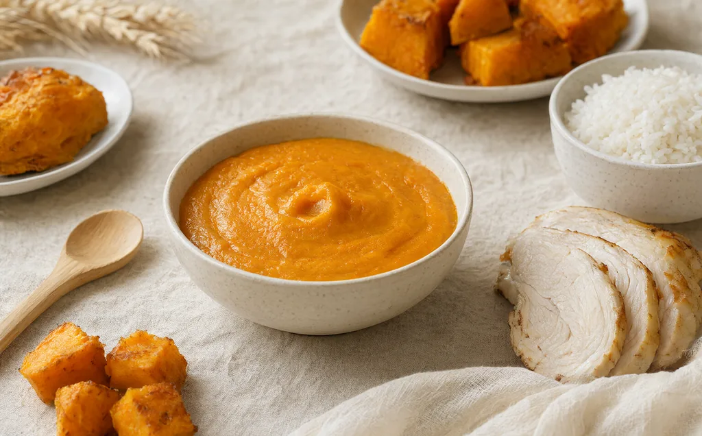
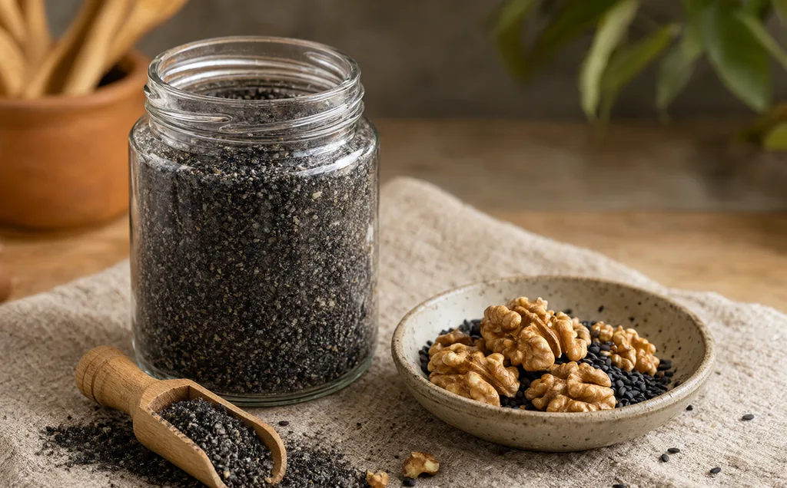

Beyond Soy Milk
豆浆之外，
还有一整个厨房。
一台加热型破壁机，至少能做八类东西：玉米汁、果蔬汁、米糊、浓汤、冰沙奶昔、酱料、植物奶、宝宝辅食。先分清冷打和热打，剩下的只是配方。

豆浆、米糊、玉米汁、浓汤、宝宝辅食。水量不超过热饮上限；糖、牛奶、椰浆最后加。
果蔬汁、冰沙、奶昔、植物奶、酱料。先放液体再放固体；不要连续打超过 2 分钟。
玉米汁
CORN · 05
甜玉米加一把米，煮打一体就是饭店那扎。牛奶最后加，奶香更鲜；没有牛奶，清甜版也好喝。
玉米 : 米 ≈ 10 : 3，水 700–750 ml果蔬汁
JUICE · 06
水分足的水果几乎不用加水。打 40–60 秒就够，久了会起泡、分层。西瓜、黄瓜、雪梨这类，冷藏后打更甜。
不加热，现打现喝米糊 · 糊羹
PORRIDGE · 07
比豆浆更稠、更细，适合早餐和胃口不好的时候。糯米、山药、银耳是稠度来源，水别低于配方下限，否则容易糊底。
干料 : 水 ≈ 1 : 8–1 : 10浓汤
SOUP · 04
洋葱、蘑菇先用少许油炒香，再入杯打。土豆负责稠度，牛奶或淡奶油最后加。配一片面包，就是一顿。
西式浓汤，盐最后调300 g 主料（南瓜/蘑菇/番茄）+ 50 g 洋葱 + 60 g 土豆 + 500–600 ml 水，浓汤模式。结束后加 100–150 ml 牛奶或 60 ml 淡奶油，盐和黑胡椒最后调。
冰沙 · 奶昔
ICE · 05
冷冻水果比加冰块更浓，也不会被水稀释。机器不支持打冰时，把冻块切小、分次点动，别硬来。
冷冻水果 + 少量液体，30–60 秒酱料 · 植物奶
SAUCE & MILK · 06
坚果必须烤熟、放凉再打；打酱要分次、勤刮壁。植物奶打完过滤，冷藏保存 2–3 天，喝前摇匀。
酱料 3–6 分钟；植物奶 1–2 分钟宝宝辅食
BABY · 03
食材蒸熟再打，不加盐糖，1 岁前不加蜂蜜。第一次添加单一食材，连续 3 天观察过敏反应。
具体喂养请遵儿科医生建议豆浆不能替代母乳或配方奶。6 月龄后可作为辅食的一部分，先少量尝试；对大豆、坚果过敏的宝宝请避开相应食材。任何喂养调整，请先咨询儿科医生或注册营养师。
干粉研磨
GRIND · 02
谷物和坚果必须完全干燥，否则会结块、粘杯、伤刀。每次 20–30 秒，停 10 秒再继续，少量分批。
食材不超过杯体 1/3一台机器的边界，往往不是刀片，而是你愿不愿意多洗一个杯子。—— 浆造所 · 使用笔记